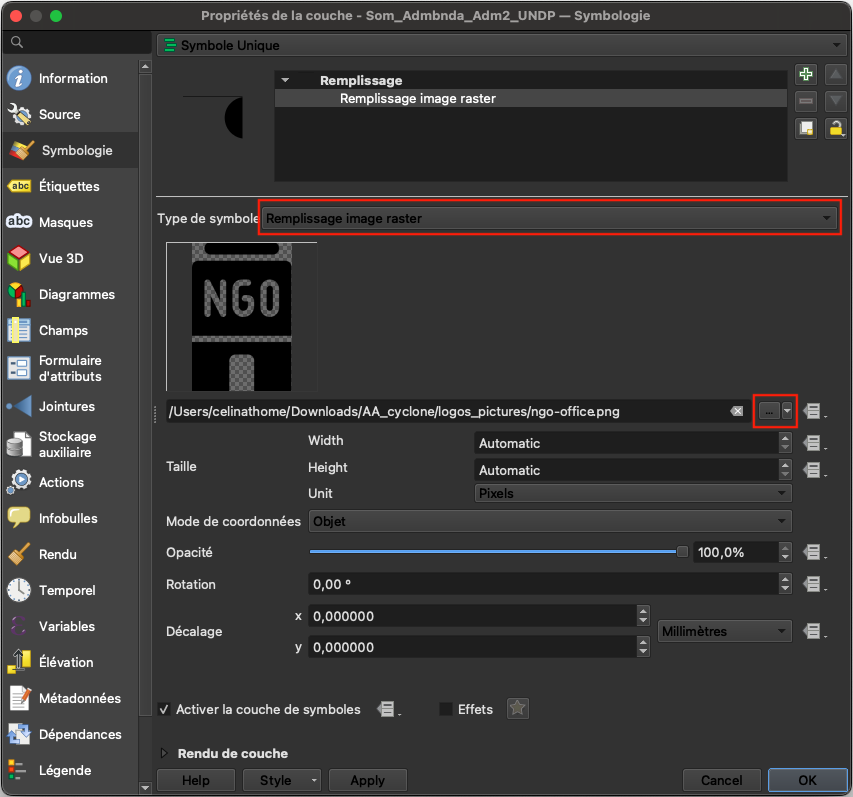

Workflow de déclenchement en QGIS pour Madagascar#
Le workflow QGIS présenté dans cet article a été développé dans le cadre du projet “Anticipatory-Action” (AA) (action anticipative) de la Croix-Rouge malgache (CRM), de la Croix-Rouge allemande (GRC) et de l’institut de Heidelberg pour les technologies de géoinformation (HeiGIT).
Le workflow est presque entièrement automatisé grâce à un modèle QGIS et ne nécessite aucune intervention manuelle. Le chapitre –Automated Trigger Workflow— décrit le processus et l’application pratique. Chaque étape inclut dans le modèle est expliquée en détail afin de permettre une compréhension complète du workflow et de la manière dont l’analyse a été réalisée.
Contexte#
La définition de déclencheurs est l’un des piliers du système de financement basé sur les prévisions (anglais: Forecast-based financing (FbF)). Pour qu’une Société Nationale puisse bénéficier d’un financement automatique pour ses actions précoces, son protocole d’action précoce doit définir clairement où et quand les fonds seront alloués et l’aide fournie. Dans le cadre de l’AA, cela est décidé en fonction de valeurs seuils spécifiques, appelées “déclencheurs”, basées sur les prévisions météorologiques et climatiques, qui sont définies pour chaque région (voir FbF Manual).
Déclaration de déclenchement#
Déclencheur préalable à l’activation: au moins une des prévisions météorologiques de Météo Madagascar, du RMSC La Réunion ou de l’ECMWF prévoit une probabilité supérieure à 50% qu’un cyclone tropical de force tempête tropicale ou plus atteigne les côtes dans les 7 prochains jours.
ADéclencheur d’activation: si les prévisions de Météo Madagascar (DGM) indiquent l’arrivée d’un cyclone tropical avec des vents dépassant 118 km/h dans les 48 à 72 heures à venir.
Téléchargement du rapport#
Fonctionnalité du flux de travail#
Le concept de processus déclencheur est illustré dans la figure ci-dessous.

Le projet QGIS présenté contient les couches nécessaires et un fichier modèle QGIS permettant d’évaluer l’impact potentiel du cyclone prévu. Le processus d’analyse sera exécuté dans le modèle QGIS, qui automatise les étapes d’évaluation de l’impact d’un cyclone tropical. Il intègre les données relatives à la trajectoire du cyclone avec les frontières administratives, les données démographiques, les infrastructures et les positions des services afin d’identifier et de quantifier les zones et les ressources exposées. Sur la base des prévisions cycloniques de Météo Madagascar, le modèle calcule la zone susceptible d’être exposée au cyclone, la population potentiellement exposée, le nombre de bâtiments exposés, les terres agricoles exposées et les établissements de santé et d’enseignement potentiellement exposés.
De plus, le fichier QGIS contient des couches représentant les entrepôts CRM et les zones qu’ils peuvent couvrir, ce qui permet d’évaluer rapidement leur accessibilité. Le dossier fourni contient également des modèles de carte et des fichiers de style permettant de générer des rapports cartographiques basés sur les calculs du modèle.
La documentation est divisée en deux parties. La première partie traite de l’analyse spatiale à l’aide du modèle QGIS automatisé. La deuxième partie explique comment créer des rapports cartographiques à l’aide des modèles de carte et des fichiers de style.
Attention
Le projet et le modèle ont été créés à l’aide de la version 3.40.9 (LTR) Bratislava de QGIS. Afin de garantir le bon fonctionnement du modèle, n’utilisez pas de versions antérieures de QGIS.
Données disponibles#
Pour que le mécanisme de déclenchement fonctionne correctement, nous utilisons actuellement différents ensembles de données: des données que nous supposons statiques à court terme et des données variables qui décrivent les ensembles de données qui seront vérifiés régulièrement pour déclencher le mécanisme en fonction de la survenue d’événements cycloniques anticipés.
Données fixes#
Par données fixes, nous entendons les ensembles de données nécessaires à la création des rapports cartographiques, qui ne sont pas susceptibles de changer à court terme. À long terme, ces ensembles de données peuvent être facilement adaptés.
Ensemble de données |
Source |
Descriptions |
|---|---|---|
Limites administratives |
Les limites administratives de niveau 0 à 4 pour Madagascar sont accessibles via HDX fourni par OCHA. Pour ce mécanisme de déclenchement, nous fournissons les limites administratives de niveau 1 (niveau régional) et 2 (niveau district) sous forme de fichier shapefile. |
|
Nombre de Point d’intérêt (POI) |
Les données POI (établissements scolaires et sites de santé) sont téléchargées à l’aide de l’outil HOT Export Tool basé sur les données OpenStreetMap. |
|
Entrepôts CRM |
Croix-Rouge Malagasy |
Cette couche contient des points représentant les emplacements des entrepôts CRM. |
Isochrones des entrepôts CRM |
HeiGIT |
À l’aide de la surface de friction globale, nous avons calculé la zone pouvant être atteinte en un temps donné en voiture à partir d’un entrepôt donné. |
Chiffres de population |
L’ensemble de données WorldPop au format raster fournit une estimation du nombre total d’habitants par cellule de grille pour l’année 2020. Nous travaillerons avec l’ensemble de données |
|
Nombre de bâtiments |
L’ensemble de données sur le nombre de bâtiments au format raster compte le nombre de bâtiments par cellule de grille de 100 m. Le processus de création de cet ensemble de données est disponible sur GitLab. |
|
Couverture terrestre |
L’ensemble de données sur la couverture terrestre au format raster fournit une vue d’ensemble du type de couverture terrestre dominant avec une résolution de 100 m. Le processus de téléchargement de cet ensemble de données est disponible sur GitLab. |
Raster Principal
Les trois ensembles de données raster sont combinés en un raster principal, une couche raster multibande avec une résolution spatiale de 100 mètres. Cette couche composite comprend les informations suivantes sur trois canaux :
Nombre d’habitants par cellule de grille d’après Worldpop constrained (2020)
Nombre de bâtiments par cellule de grille d’après ML Building Footprints (2021)
Type de couverture terrestre par cellule de grille d’après Copernicus Land Cover (2019)
Données de monitoring#
Attention
Les informations prévisionnelles proviendront du DGM (Météo Madagascar), qui fournira les données de trajectoire des cyclones tropicaux pour le workflow de déclenchement.
Pour analyser les événements passés, il est possible d’utiliser les données fournies par la NOAA (National Centers for Environmental Information). Les trajectoires des cyclones sont fournies dans le cadre du projet International Best Track Archive for Climate Stewardship (IBTrACS). Il s’agit de la collection mondiale la plus complète sur les cyclones tropicaux disponible à ce jour. Elle regroupe les données récentes et historiques sur les cyclones tropicaux provenant de plusieurs agences afin de créer un ensemble de données unifié, accessible au public et représentant les meilleures trajectoires. L’IBTrACS a été développé en collaboration avec tous les centres météorologiques régionaux spécialisés de l’Organisation météorologique mondiale (World Meteorological Organization (WMO)), ainsi qu’avec d’autres organisations et individus du monde entier.
Trajectoires des cyclones
Les données relatives aux trajectoires des cyclones tropicaux sont disponibles sous forme de différents sous-ensembles, en fonction de l’échelle temporelle qui vous intéresse. Des sous-ensembles régionaux peuvent également être générés, les données relatives à l’océan Indien sud étant particulièrement importantes pour ce mécanisme de déclenchement.
Estimation de l’impact du cyclone à l’aide du modèle QGIS#
Comme expliqué au début de ce chapitre, le workflow déclencheur développé est exécuté automatiquement par un modèle QGIS. Dans ce chapitre, nous expliquerons son fonctionnement et, dans une étape ultérieure, nous expliquerons comment exécuter le modèle automatisé.
Fonctionnement du modèle#
Les étapes clés suivantes sont exécutées dans le modèle :
Mise en mémoire tampon du cyclone et extraction de la zone d’impact
La trajectoire du cyclone est mise en mémoire tampon afin de créer une zone d’impact estimée. La mémoire tampon est dissoute pour générer un polygone unique représentant la zone exposée au cyclone. Cette couche sert de base pour les calculs d’exposition ultérieurs.
Unités administratives exposées
La zone tampon du cyclone est recoupée avec les limites des districts (Admin 2) afin d’extraire les districts exposés. Ceux-ci sont ensuite reliés aux régions (Admin 1) à l’aide de la région (Admin 1) afin de créer des zones de risque.
Effet sur la population
Le modèle utilise le raster de population pour calculer les statistiques zonales sur les districts exposés. Cela permet de déterminer la population totale par district et la population exposée, qui sont ensuite exportées vers un tableau.
Effet sur les infrastructures
La zone tampon du cyclone est croisée avec:
Les bâtiments pour extraire les bâtiments exposés.
Les couches des sites de santé et des établissements d’enseignement pour extraire et résumer les points d’intérêt exposés. Ces ensembles de données sont combinés dans un tableau qui résume les infrastructures exposées.
Étape 1 : Explication de la structure des fichiers#

Objectif : Cette étape décrit la structure de dossiers recommandée pour simplifier l’analyse et garantir des résultats cohérents et reproductibles.
Outil : Aucun outil ou programme particulier n’est nécessaire.
Instructions |
Structure du répertoire |
|---|---|
|

|
Étappe 2: Ouvrez le projet dans QGIS et chargez le modèle dans le concepteur de modèles QGIS#

Dans cette étape, nous allons ouvrir notre projet de déclenchement dans QGIS et charger le modèle QGIS qui exécutera automatiquement l’analyse pour nous.
Ouvrez le fichier
AA_Cyclone_Monitoring_Trigger_MAD.qgzen double-cliquant dessus.Le projet QGIS s’ouvrira avec de nombreuses données préchargées. Ces données sont nécessaires pour exécuter le modèle QGIS et créer certaines cartes de résultats.
Les données seront structurées en cinq groupes:

Groupe 1: Données d’entrée fixes (Fixed_Input_data)
Ce groupe contient toutes les données d’entrée fixes nécessaires au bon fonctionnement du modèle. Ces ensembles de données restent constants et ne changent pas d’un événement à l’autre. La seule donnée supplémentaire nécessaire est la trajectoire de la tempête pour l’événement étudié, qui doit être ajoutée avant ce groupe de données dans le panneau des couches.
Attention
Assurez-vous toujours d’utiliser la trajectoire de tempête la plus récente pour l’événement analysé. Pour ajouter la couche, il suffit de la glisser-déposer dans le panneau Couches, en la plaçant directement au-dessus du groupe Fixed_Input_data pour plus de clarté.
Pour une meilleure gestion des données, donnez à la trajectoire de la tempête un nom descriptif, tel que trajectoire_tempete_nom-événement_année (par exemple, trajectoire_tempete_freddy_2023). Cette convention de nommage vous aide à organiser votre espace de travail et garantit que les données correctes sont utilisées pendant l’analyse.
Groupe 2: Résultats du modèle (Model_outputs)
Ce groupe sert à organiser toutes les couches de sortie générées par le modèle après son exécution. Vous pouvez examiner les sorties ici et identifier les couches nécessaires pour des cartes spécifiques. Une fois identifiées, déplacez-les vers le groupe de cartes approprié pour la visualisation et la mise en page.
Groupe 3: Carte Aperçu de l’impact du cyclone (Map_Cyclone_Impact_Overview)
Ce groupe comprend toutes les couches nécessaires à la création de la carte générale de l’impact du cyclone (illustrée ci-dessous). La trajectoire de la tempête et les limites de la région (Admin1) (Admin1_Impact_Overview_Map) sont préchargées pour vous aider à démarrer rapidement.
Assurez-vous que vous travaillez avec la trajectoire correcte et mise à jour de la tempête pour l’événement étudié.

Fig. 61 Cette carte sera créée à l’aide des couches du groupe 3.#
Groupe 4: Carte d’évaluation de l’impact du cyclone (Map_Cyclone_Impact_Assessment)
Ce groupe contient toutes les couches nécessaires pour générer des cartes détaillées d’évaluation d’impact. Comme pour la carte générale, la trajectoire de la tempête et les limites de la région (Admin1) sont préchargées. Assurez-vous d’utiliser les données d’événement correctes afin de garantir la cohérence et la précision de l’évaluation. Dans cette section, nous pouvons créer 5 cartes différentes pour différents impacts:
population exposée
bâtiments exposés
établissements scolaires exposés
établissements de santé exposés
terres agricoles exposées
Les résultats finaux de la carte ressembleront à ce qui suit.

Fig. 62 Cette carte sera créée à l’aide des couches du groupe 4.#
Groupe 5: Isochrones de l’entrepôt CRM (CRM_Warehouse_Isochrones)
Ce groupe comprend les isochrones pour tous les entrepôts, calculées pour des intervalles de temps allant jusqu’à 24 heures. Ces couches sont utiles pour évaluer l’accessibilité des sites dans le cadre de la planification des interventions d’urgence. Ce groupe est utilisé pour créer la carte matrice d’accessibilité des entrepôts CRM. Il est également possible d’ajouter une isochrone spécifique à l’un des entrepôts précédents. Nous y reviendrons plus bas.
Ouvrir le modèle dans QGIS#
Nous allons ouvrir le modèle QGIS :
Dans la barre du haut de votre fenêtre QGIS, naviguez vers
Traîtement->Modeleur. Une nouvelle fenêtre s’ouvrira. Il s’agit du concepteur de modèles.Dans le panneau du haut, cliquez sur
Modèle->Ouvrir le Modèleet naviguez jusqu’à votre dossier “AA_Cyclone_Monitoring_Trigger_MAD/trigger_model”.Sélectionnez “Cyclones_EAP_MAD_Trigger.model3” et cliquez sur
Ouvrir. Le modèle s’ouvrira et vous verrez des boîtes jaunes, blanches, vertes et grises.

Fig. 63 Ouvrir le modélisateur graphique dans QGIS 3.44#
Boîte |
Signification |
Description |
|---|---|---|
Jaune |
Entrée du modèle |
Définition des données d’entrée pour le modèle sur lequel le modèle va fonctionner. |
Blanc |
Algorithmes |
Les algorithmes ou outils sont des étapes de géotraitement spécifiques qui effectuent des tâches spécifiques, telles que le découpage, la reprojection ou la création de zones tampons. |
Vert |
Sortie du modèle |
Les résultats créés par le modèle (couches de sortie) sont automatiquement ajoutés à votre panneau de couches dans l’interface de votre projet QGIS. |
Gris |
Commentaires |
Les boîtes sont utilisées pour expliquer plus en détail les processus spécifiques. |
Étappe 3: Exécutez le modèle#

Entrées et sorties du modèle
Un modèle QGIS peut être exécuté en naviguant vers la barre du haut >
Modèle>Exécuter le modèleou en cliquant sur l’icône .
.Une nouvelle fenêtre s’ouvrira. Vous devrez y définir les entrées et les sorties du modèle. Pour chacune de ces entrées obligatoires, cliquez sur la flèche déroulante et sélectionnez le fichier correspondant.

Fig. 64 Sélectionner les entrées et définir les sorties avant d’exécuter le modèle.#
Pour exécuter le modèle, sélectionnez les 5 couches d’entrée suivantes:
ADM1 =
mdg_admbnda_adm1_BNGRC_OCHA_20181031ADM2 & Risk =
mdg_adm2_risk - mad_adm2_riskCyclone_monitoring_data =
cyclone track of the current eventMadagascar_Health_and_Education_Facilities =
Madagascar_Health_and_Education_FacilitiesMaster Raster =
MAD_pop_constrained_buildings_landcover
Plus bas, vous devez spécifier où sauvegarder les sorties. Pour chaque sortie, cliquez sur les trois points
 >
> Enregistrer dans un Geopackage.... Une fenêtre de l’explorateur de fichiers s’ouvrira. Naviguez jusqu’au dossier.../AA_Cyclone_Monitoring_Trigger_MDG/model_outputs/et donnez-lui le nom de la couche de sortie et la date (AAAAMMJJ).Exposed_Cyclone_Area_AAAAMMJJ, par exemple,Exposed_Cyclone_Area_20250805Une des sorties s’appelle
Spreadsheet_Exposed_Districtpour laquelle le modèle produira un fichier.csv. Pour cette couche, choisissezEnregistrer vers un fichier..., naviguez jusqu’au dossier.../AA_Cyclone_Monitoring_Trigger_MDG/model_outputs/et donnez-lui le nomSpreadsheet_Exposed_Districts_AAAAMMJJExposed_Education_Facilities_points_AAAAMMJJExposed_Health_Facilities_points_AAAAMMJJExposed_Regions_YAAAAMMJJExposed_Districts_AAAAMMJJExposed_Population_AAAAMMJJExposed_Buildings_AAAAMMJJExposed_Agricultural_Landcover_AAAAMMJJExposed_Education_Facilities_AAAAMMJJExposed_Health_Facilities_AAAAMMJJ
Une fois que vous avez défini les noms et les emplacements de sauvegarde des couches de sortie, cliquez sur
Exécuterto execute the model. pour exécuter le modèle. Les couches de résultats de sortie seront automatiquement ajoutées à la fenêtre principale de QGIS une fois le processus terminé. Quand le processus a terminé, vous pouvez fermer la fenêtreModeleur.Vous verrez de nouveaux couches ajoutés à la zone de travail de la carte et au panneau des calques (en bas à gauche). Déplacez les nouveaux calques vers le groupe “Model_Outputs”.

Vidéo: Modèle d’entrée et de sortie
Résultats
Nous avons toutes les couches nécessaires pour créer les cartes individuelles. La section suivante explique comment utiliser les couches prédéfinies et calculées pour créer les cartes à l’aide des modèles de carte et des fichiers de style de couche.
Création des cartes à l’aide des modèles de carte#
Visualisation et mise en forme des résultats du modèle et création de la carte imprimée#
Cartes de résultats
Nous générerons trois types de cartes différents pour faciliter l’analyse :
La carte 1 donnera un aperçu de l’impact du cyclone sur les districts touchés, la gravité du cyclone et l’emplacement des entrepôts concernés.
La carte 2 se concentrera sur l’impact sur les infrastructures et la population. Nous créerons 5 cartes d’impact différentes affichant les informations suivantes:
population exposée
bâtiments exposés
sites de santé exposés
établissements scolaires exposés
couverture agricole exposée
De plus, une carte indiquant les isochrones des entrepôts pour les 13 entrepôts sera fournie. La carte et le modèle de carte se trouvent dans le dossier warehouse_isochrone_matrix.
Nous allons créer les cartes en deux étapes: Tout d’abord, nous allons utiliser le layer styling panel (panneau de style des couches) et le layer style files (fichiers de style des couches) (.qml) pour ajuster la visualisation des couches sur le canevas de la carte.
La deuxième étape consiste à utiliser le print layout composer pour créer des cartes imprimables avec des tableaux de données supplémentaires.
Carte 1: Aperçu de l’impact du cyclone: Districts touchés, gravité de l’événement et emplacement des entrepôts#
Couches nécessaires pour cette carte:
CRM_Warehousescyclone_trackExposed_Cyclone_AreaAdmin1_Impact_Overview_Mapdéjà chargée et stylisée dans QGISExposed_Districts
Faites un clic droit sur chacun des couches et sélectionnez Dupliquer la couche. Déplacez la copie vers le groupe “Map_Cyclone_Impact_Overview”.
Les couches devraient être disposées comme indiqué dans la figure ci-dessous.

Stylisation des couches#
Faites un clic droit sur la couche exposed_districts ->
Propriétés->SymbologieDans le coin inférieur gauche, cliquez sur
Style->Charger le styleDans la nouvelle fenêtre, cliquez sur les trois points
. Naviguez jusqu’au dossier “AA_Cyclone_Monitoring_Trigger_MAD/layer_styles” et sélectionnez le fichier “exposed_districts_style.qml”.Cliquez sur
Ouvrir. Cliquez ensuite surCharger le styleDe retour dans la fenêtre “Propriétés de la couche” cliquez sur
AppliqueretOK
Répétez ce processus pour les couches de sortie suivantes, ainsi que pour leurs feuilles de style correspondantes:
Nom de la couche |
Style |
Remarques |
|---|---|---|
|
|
préchargé |
|
|
résultat du modèle |
|
|
résultat du modèle |
|
|
préchargé |
Le style de la couche
CRM_warehousesn’est pas encore défini. Cliquez avec le bouton droit sur la coucheCRM_warehouses>Propriétéset naviguez à la sectionSymbologie.
{kind=link}

Sélectionnez
Remplissage image rasterpuis cliquez sur les trois points.Dans le dossier du projet, naviguez jusqu’au sous-dossier appelé
logo_pictures. Vous y trouverez un fichier png appelé “ngo-office”. Sélectionnez-le et cliquez surOuvrir.
Attention
Assurez-vous que toutes les couches de sortie sont correctement ajoutées au projet QGIS. Si certaines couches manquent, essayez de relancer le modèle ou vérifiez dans le dossier Model Outputs si les fichiers ont bien été créés.
Pour conserver un espace de travail clair et organisé, regroupez les couches de sortie dans le panneau Couches sous le groupe approprié (par exemple, Map_Cyclone_Impact_Overview). Cela permet de structurer votre projet et facilite la navigation pendant le processus de création de la carte.
Création de la mise en page#
Pour faciliter la visualisation, nous avons créé ces modèles de carte afin de présenter les résultats de l’analyse des déclencheurs. Ces modèles servent de base à vos propres visualisations et sont disponibles dans le répertoire suivant: AA_Cyclone_Monitoring_Trigger_MAD/map_templates. Vous pouvez personnaliser les modèles en fonction de vos besoins et préférences. Vous trouverez de l’aide ici.
Désactivez tous les groupes de couches à l’exception du groupe
Map_Cyclone_Impact_Overviewet de la carte de baseOpenStreetMap.Ouvrez une nouvelle mise en page en cliquant sur
Projet->Gestionnaire de mise en page. Une petite fenêtre apparaîtra. Vous pouvez y sélectionner une mise en page existante ou créer une nouvelle mise en page à partir d’un modèle.Nous voulons créer une nouvelle mise en page à partir d’un modèle. Cliquez sur le menu déroulant
Mise en page videet sélectionnezSpécifique.Ci-dessous, cliquez sur les trois points
et naviguez jusqu’au dossier ../AA_Cyclone_Monitoring_Trigger_MAD/map_templates/et sélectionnez le fichier nommécyclone_impact_overview_map_template. Cliquez surOuvrir, enpuis surCréer.QGIS vous demandera de nommer la nouvelle mise en page. Donnez-lui un nom tel que “Cyclone_Overview_Map_Freddy_2023”. Cliquez sur
OK. Une nouvelle fenêtre s’ouvrira. Il s’agit du compositeur de mise en page. Il devrait ressembler à la figure ci-dessous.

Fig. 65 Le compositeur de mise en page après l’ouverture du fichier modèle.#
La mise en page chargera automatiquement le canevas de la carte. Cependant, pour finaliser le rapport, nous devons ajuster et mettre à jour certains éléments de la mise en page d’impression. Par exemple, sur le côté droit de la carte, le tableau des attributs ne s’affiche pas correctement, la légende semble incorrecte et les logos du CRM et de HeiGIT s’affichent sous forme de croix rouges.
Mettre à jour le titre de la carte
Cliquez sur l’élément de texte du titre en haut de la carte.
Dans le panneau
Propriétés de l'objetmodifiez le texte Étiquette principale pour qu’il corresponde à votre événement, par exempleCyclone Harald – 2025.Ajustez la taille de la police ou l’alignement si nécessaire.
Mettre à jour le tableau des attributs situé à droite de la carte

On the right side, there is a attribute table that did not fully load. We want to update the attribute table to display the exposed districts.
In the
Item Propertiespanel, select theExposed_Districtslayer and click Refresh Table DataClick on
Attributes...In the Columns section:
Click
Clear➕ Add the columns:
ADM1_EN,ADM2_EN,ADM2_PCODE
In the Sorting section:
➕ Add
ADM1_ENand set the sort order toAscending
Click OK to apply
Note
💡 If too many districts are affected, the attribute table might not fit the page. Reduce the font size in the table’s item properties to make everything visible — but be aware that this may reduce readability.
Adjust the Legend
Select the legend item, navigate to the
Item Propertiestab and scroll down until you see theLegend itemsfield. If it is not there, check if you have to open the dropdown. Make sureAuto updateis not checked.Remove all items in the legend by clicking on each item and then the red minus icon
In the pop-up, check Only show visible layers to help you find the correct ones
To rename a legend item, double-click on the layer name in the legend item list and enter the new name
➕ Add the following layers by clicking the green plus:
Admin1_Impact_Overview_Mapexposed_districtsCyclone TrackExposed_Cyclone_AreaCRM_warehousesOpenStreetMapNow, let’s rename the layers in the legend. In the Item properties, below the list of the legend layers, there is a

Edit selected item properties-button. By clicking on it, you can edit the label of the icon in the legend. Rename the layers as follows:Admin1_Impact_Overview_Map→ rename to
Regions
exposed_districts→ rename to
Exposed Districts
Cyclone Track→ rename to
Projected Cyclone Track
Exposed_Cyclone_Area→ rename to
Exposed Cyclone Area
relevant_warehouses→ rename to
Relevant Warehouses
Background Map: OpenStreetMap→ rename to
Background Map: OpenStreetMap
Adjust the icons by clicking on the
field in the items list or on the red cross in the map template.
In the Item Properties, correct the path to the CRM logo by clicking on the three dots
and navigate to \aa_madagascar\AA_Cyclone_Monitoring_Trigger_MAD\logos_picturesand selecting the CRM logo file.Repeat the process for the second missing image. This time, select the HeiGIT Logo
Below the logos, adjust the information in the text box by selecting the text box and navigating to the Item properties.
Finally, let’s lock the layers and layer styles so that changes in the main QGIS window do not affect our print layout:
In the item list, select Map 1.
In the item properties, check the boxes for lock layers and lock styles for layers. This will prevent the map to automatically when we make changes to the map canvas

Attention
Checklist for final map output:
Map Information: Review and update all text elements as needed.
Legend: Remove unnecessary items and rename layers with clear, meaningful descriptions.
Exposed Districts: Include only districts that are actually impacted in your “List of Exposed Districts”. Update them according to the event.
Your final output should look like this after styling the layer
You will now see the exposed districts and the locations of relevant warehouses clearly displayed on the map. Additionally, the original storm track line — used as input data — is highlighted, along with the buffered impact area, which serves as a proxy for identifying exposed districts.
Exporting the Map#
When you have finished the design of your map, you can export it as pdf or image file in different data formats.
Export as Image
In the print layout click on
Layer->Export as ImageChoose the map_outputs folder. Give the file the name of the event e.g MDG_Trigger_Impact_Overview_Map_Freddy_2023.
Click on
SaveThe window
Image Export Optionswill appear. ClickSave. Now the image can be found in the result folder.
Export as PDF
In the print layout click on
Layer->Export as PDFChoose the map_outputs folder. Give the file the name of the event e.g MDG_Trigger_Impact_Overview_Map_Freddy_2023.
Click on
Save.The window
PDF Export Optionswill appear. For the best results, select thelosslessimage compression.Click
Save. Now the image can be found in the result folder.
Map 2: Impact Assessment: Exposed Population and Critical Infrastructure#
Layers needed for this map:
CRM_Warehousescyclone_trackExposed_Cyclone_AreaExposed_PopulationAdmin1_Impact_Assessment_Mapalready loaded and style in QGIS
Right click on each layer > Duplicate this layer and move the copies to the group “Map_Cyclone_Impact_Assessment”

Map 2: Styling of the layers#
Deactivate all the layers except gor the group “Map_Cyclone_Impact_Assessment” and the OpenStreetMap Basemap.
Right click on the “exposed_population - copy” layer ->
Properties->SymbologyIn the down left corner click on
Style->Load StyleIn the new window click on the three points
. Navigate to the “AA_Cyclone_Monitoring_Trigger_MAD/layer_styles” folder and select the file “exposed_population_style.qml” style layer.Click
Open. Then click onLoad StyleBack in the “Layer Properties” window click
ApplyandOK
Repeat this process for the following output layers, along with their corresponding style sheets:
Layer name |
Style |
Comment |
|---|---|---|
|
|
pre-loaded |
|
|
model output |
|
|
model output |
|
|
loaded by user |
Attention
Ensure that all relevant output layers are properly added to the QGIS project. If any layers are missing, try re-running the model or check your Model Outputs folder to see if the files were created successfully.
To maintain a clear and organized workspace, group the output layers in the Layers panel under the appropriate group (e.g., Map_Cyclone_Impact_Overview). This helps keep your project structured and makes navigation easier during the map creation process.
Other Impact Assessment Maps
The documentation covers the exposed population impact assessment map. However, the model also estimates the exposed buildings, landcover, and health and education facilities. These variables can also be displayed on the map using the following style files. To keep the map easily understandable, use only one of the
Layer name |
Style |
Comment |
|---|---|---|
|
|
model output |
|
|
model output |
|
|
model output |
|
|
model output |
|
|
model output |
|
|
model output |
|
|
model output |
|
|
model output |
|
|
model output |
|
|
loaded by user |
Map 2: Making the Print Layout#
Tip
The same workflow applies to all five impact variables: population, buildings, education facilities, health sites, and agricultural landcover. The following example demonstrates the process for creating the population impact map. The remaining maps can be generated by following the same steps.
Open a new print layout by clicking on
Project->Layout Manager. A small new window will appear. Here you can select an existing layout or create a new layout from a template.We want to create a new layout from a template. Click on the
Empty Layoutdropdown menu and selectSpecific.Below, click on the three dots
and navigate to the folder ../AA_Cyclone_Monitoring_Trigger_MAD/map_templates/and select the file with the namecyclone_impact_population_map_template. ClickOpen, thenCreate.QGIS will ask you to name the new layout. Give it a name such as “Cyclone_Overview_Map_Freddy_2023”. Click
OK. A new window will open. This is the print layout composer. It should look similar to the figure below.

Update the Map Title
Click on the title text element at the top of the map.
In the
Item Propertiespanel, edit the Main Label text to match your event, e.g.Cyclone Harald – 2025.Adjust font size or alignment as needed.
Update the Attribute Table on the Right-Hand Side of the Map
To update the attribute table displaying the exposed districts:In the
Item Propertiespanel, select theexposed_populationOr any other layer you are working with layer and click Refresh Table DataClick on
Attributes...In the Columns section:
Click
Clear➕ Add the columns:
ADM1_EN,ADM2_EN,ADM2_PCODEandexposed_populationor any other layer you are working with
In the Sorting section:
➕ Add
ADM1_ENand set the sort order toAscending
Click OK to apply
Note
If too many districts are affected, the attribute table might not fit the page. Reduce the font size in the table’s item properties to make everything visible — but be aware that this may reduce readability.
Adjust the Legend by clicking on it in the map layout and have a look at the
Item Propertiestab and scroll down until you see theLegend itemsfield. If it is not there, check if you have to open the dropdown. Make sureAuto updateis not checked.Remove all items in the legend by clicking on each item and then the red minus icon
In the pop-up, check Only show visible layers to help you find the correct ones
To rename a legend item, double-click on the layer name in the legend item list and enter the new name
➕ Add the following layers by clicking the green plus:
In the pop-up, check Only show visible layers to help you find the correct ones
💡 To rename a legend item, double-click on the layer name in the legend item list and enter the new name
Ensure all legend entries use clear and meaningful labels
Admin1_Impact_Overview_Map→ rename to
Regions
exposed_population→ rename to
Exposed Population
Cyclone Track→ rename to
Projected Cyclone Track
Exposed_Cyclone_Area→ rename to
Exposed Cyclone Area
relevant_warehouses→ rename to
Relevant Warehouses
Background Map: OpenStreetMap→ rename to
Background Map:
OpenStreetMap
Admin1_Impact_Overview_Map→ rename to
Regions
exposed_building→ rename to
Exposed Buildings
Cyclone Track→ rename to
Projected Cyclone Track
Exposed_Cyclone_Area→ rename to
Exposed Cyclone Area
relevant_warehouses→ rename to
Relevant Warehouses
Background Map: OpenStreetMap→ rename to
Background Map:
OpenStreetMap
Admin1_Impact_Overview_Map→ rename to
Regions
exposed_health_facilities→ rename to
Exposed Health Facilities
Cyclone Track→ rename to
Projected Cyclone Track
Exposed_Cyclone_Area→ rename to
Exposed Cyclone Area
relevant_warehouses→ rename to
Relevant Warehouses
Background Map: OpenStreetMap→ rename to
Background Map:
OpenStreetMap
Admin1_Impact_Overview_Map→ rename to
Regions
exposed_education_facilities→ rename to
Exposed Education Facilities
Cyclone Track→ rename to
Projected Cyclone Track
Exposed_Cyclone_Area→ rename to
Exposed Cyclone Area
relevant_warehouses→ rename to
Relevant Warehouses
Background Map: OpenStreetMap→ rename to
Background Map:
OpenStreetMap
Admin1_Impact_Overview_Map→ rename to
Regions
exposed_agricultural_landcover→ rename to
Exposed Agriculture in Hectare
Cyclone Track→ rename to
Projected Cyclone Track
Exposed_Cyclone_Area→ rename to
Exposed Cyclone Area
relevant_warehouses→ rename to
Relevant Warehouses
Background Map: OpenStreetMap→ rename to
Background Map:
OpenStreetMap
Admin1_Impact_Overview_Map→ rename to
Regions
exposed_health_facilities_points→ rename to
Exposed Health Facilities Points
Cyclone Track→ rename to
Projected Cyclone Track
Exposed_Cyclone_Area→ rename to
Exposed Cyclone Area
relevant_warehouses→ rename to
Relevant Warehouses
Background Map: OpenStreetMap→ rename to
Background Map:
OpenStreetMap
Admin1_Impact_Overview_Map→ rename to
Regions
exposed_education_facilities_points→ rename to
Exposed Health Education Points
Cyclone Track→ rename to
Projected Cyclone Track
Exposed_Cyclone_Area→ rename to
Exposed Cyclone Area
relevant_warehouses→ rename to
Relevant Warehouses
Background Map: OpenStreetMap→ rename to
Background Map:
OpenStreetMap
Your final output should look like this after styling the layer
The map now clearly displays the exposed population within the affected districts, along with the locations of relevant warehouses. The original storm track line — used as input data — is highlighted, as well as the buffered impact area, which serves as a proxy for identifying exposed districts.
On the right-hand side of the map, a list shows all exposed districts, including data on total population and exposed population. The districts (Admin 2) are organized under their corresponding regions (Admin 1).
Exporting the Map#
When you have finished the design of you map you can export it as pdf or image file in different data formats.
Export as Image
In the print layout click on
Layer->Export as ImageChoose the map_outputs folder. Give the file the name of the event e.g MDG_Trigger_Impact_Overview_Map_Freddy_2023. For the specific impact assessment change the name to something like MDG_Trigger_Impact_Population_Map_Freddy_2023.
Click on
SaveThe window
Image Export Optionswill appear. ClickSave. Now the image can be found in the result folder.
Export as PDF
In the print layout click on
Layer->Export as PDFChoose the map_outputs folder. Give the file the name of the event e.g MDG_Trigger_Impact_Overview_Map_Freddy_2023. For the specific impact assessment change the name to something like MDG_Trigger_Impact_Population_Map_Freddy_2023.
Click on
Save.The window
PDF Export Optionswill appear. For the best results, select thelosslessimage compression.Click
Save. Now the image can be found in the result folder.

Working with the warehouse isochrones#
The project includes isochrones for each warehouse. The warehouse isochrones correspond to one warehouse and are identifiable by their location name. If you want to add an isochrone to one of the It is possible to add individual isochrones to the map templates by simply duplicating the isochrone layer and moving it to the desired map group.
Historical Analysis of Cyclone Impacts#
To run the full trigger process using historical cyclone track data, you can assess the impacts of past events and gain insights into what occurred in similar scenarios. The storm track data is available from the International Best Track Archive for Climate Stewardship (IBTrACS). Instructions on how to access this data are provided in the following section.
Download of historical storm track data#
The International Best Track Archive for Climate Stewardship (IBTrACS) v04r01 data is updated three times a week (usually on Sunday, Tuesday, and Thursday), and could be updated more frequently to address specific needs and use cases. The latest updates in the correct file format can be found on their website:
Look for the
Access Methodssection and click onShapefiles. The link leads to the following website which can also be seen in the figure below.Since we don’t need storm track data for the entire world or the full archive, we will download only a relevant subset. Locate for the file named
IBTrACS.ACTIVE.list.v04r01.lines.zipand click on it - the download should begin automatically.Unzip the file and open it in QGIS.
Open the attribute table and delete all the storm tracks that are not relevant for this analysis. Safe the updated storm track file.
Note
The storm track subset IBTrACS.ACTIVE.list.v04r01.lines.zip contains all storms active in the last 7 days. If more comprehensive data is needed, it is advisable to download a subset by basin. For Madagascar, the most relevant region is SI – South Indian, which includes our Area of Interest. This dataset can be downloaded from the same website under the name IBTrACS.SI.list.v04r01.lines.zip.

Comment exécuter le modèle#
Le QGIS Model Designer est un outil visuel qui permet aux utilisateurs de créer et de modifier un flux de travail avec tous les outils disponibles dans QGIS qui peuvent être utilisés de manière répétée, simple et rapide, tout en garantissant la reproductibilité. Il fournit une interface graphique pour créer des flux de travail en connectant des outils et des algorithmes de géomatique. L’utilisateur peut définir les entrées, les sorties et le flux de données entre les différentes étapes de traitement.